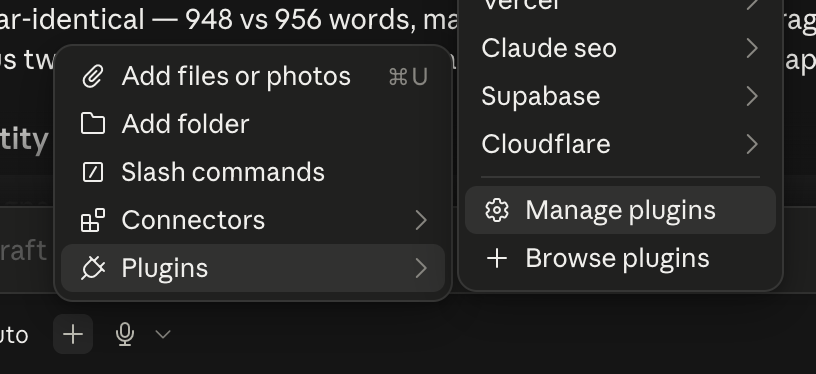
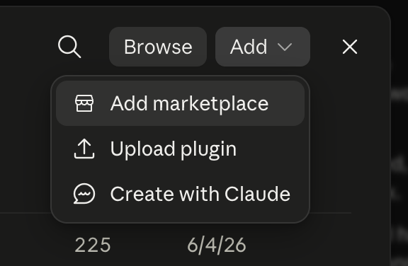
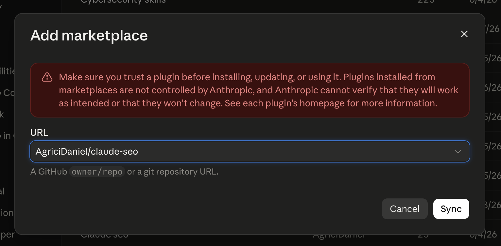

In the next 45 minutes you'll run a real AI visibility audit on your own website. No code. No terminal.
That's the whole list. There is nothing to download, no account to create, no card to enter. If you can open an app and type a sentence, you can do everything in this session.
The Claude desktop app, signed in, on a paid plan. That's it. If you're reading this, you almost certainly have it already.
No terminal. No code editor. No GitHub account. No website login. No credit card. Nothing to install beyond the app you already opened.
Don't have the app open yet? Grab it now while I talk. You'll catch up in two minutes, and nothing today depends on you being ahead.
This is the habit that matters most today, and it's the reason none of this requires you to be technical. You're not learning software. You're describing what you want to someone who already knows how to do it.
Hold onto this. In about twenty minutes you'll get a report with words you've never seen, and this is the whole answer to that.
You ask, it answers. The one you already use.
You hand it a job and walk away. It works on Anthropic's computers and comes back when it's done.
Works on your computer. It's the one place you can add new abilities to Claude.
Don't let the name put you off. You will not write a single line of code today. It's called Code because it can reach out and do things on your machine, and that's exactly what we need.
A skill is a set of instructions that teaches Claude how to do one job properly. Not a program you run. More like handing a very capable assistant the professional handbook for a field they haven't worked in yet.
25 skills for finding and fixing how visible you are to AI. Somebody who does this for a living wrote down how they do it, and published it for anyone to use.
It lives on GitHub. Think of it like Google Drive, but shared publicly. Anyone can open it and read exactly what's inside. That's why this costs nothing, and it's why you'll see a warning in a moment.
This is the move that separates chatting with AI from operating it, and it takes about four clicks.
In the chat box, click the +, then Plugins → Manage plugins.

Top right, click Add → Add marketplace, then Add from a repository.

Paste this into the URL box, then press Sync.

A Claude seo card appears. Click it, then click install. No restart needed.
That red warning is accurate. Anthropic didn't make this, so they can't vouch for it. It's open source, and the code is public.
It goes and reads your site the way ChatGPT, Perplexity, and Google's AI read it. This takes a few minutes. Start it, then leave it alone.
Keep going. By the time your report lands, you'll know exactly how to read it. Put questions in the chat as they come up and we'll hit them at the end.
Nothing here depends on your run finishing at any particular moment. If it's still going at the end, it'll be waiting for you when we're done.
They're two links in one chain. Search is how AI finds you at all, and everything after that decides whether it quotes you. Skipping the first means the second never happens.
ChatGPT and the rest don't know your site exists. They go and search, behind the scenes, the same way you would. If you don't show up in those results, you're never in the running.
Now it's on your page. Can it actually make sense of you? If it can, it quotes you and names you. If it can't, it moves on to whoever's easier.
You'll see GEO and AEO used interchangeably. Different names, same job: being the answer rather than a link.
You show up in ordinary search results.
The AI's own search finds you there.
It reads your page without a struggle.
It quotes you, and says your name.
Break any link and you're invisible. Most businesses break step three without ever knowing it, and that's the one today's report measures.
Search engines rank the businesses that other credible people vouch for, and that obviously know their subject. Everything else is detail. Two levers move it.
One link from a respected name in your field beats a hundred junk ones. Get listed by your chamber and your associations. Answer reporters. Sponsor the local thing. Ask the people already naming you to link to you.
Write from real experience, the specifics only you would know. Show who's behind the business. Stay on your topic. Collect reviews. Write it yourself. Thin AI-spun pages get spotted and they hurt you.
There are no shortcuts here that work. Buying links and stuffing keywords are built to be caught, and they drag you down when they are.
Some of it you can fix this afternoon, in your own words on your own pages. The rest no amount of work on your website will touch. Knowing which is which is most of the skill.
Your words. Your page titles. The facts you do or don't state. How fast it loads. Whether the basics a customer needs are actually written down anywhere.
Your reviews. Your listings. Whether Wikipedia knows you exist. What people say about you on Reddit. Who links to you. No website rebuild fixes any of this.
This is why "just redo the website" is usually the wrong answer. Sometimes the real problem is that the internet has the wrong idea about who you are.
For twenty years the game was getting higher on a page of blue links. That's not the game anymore. Someone asks a question, and something reads the web and answers them in a sentence. You're either in that sentence or you aren't.
Which raises an awkward question about your website. It was built for a person with eyes, a mouse, and patience. That's not what's reading it now.
Here's why AI quotes some businesses constantly and never mentions others, and it has almost nothing to do with how good your business is.
A person. Big photos, a video across the top, menus, a booking widget, a popup. Beautiful, and it works on someone with eyes and a mouse who'll wait for it to load. Every one of those things is built out of code.
Thousands of lines of code, because that's what it takes to make all of that look good. It has to dig through every bit of it to find your actual words. And when it gets there, those words are short, spread thin, and written to sound nice rather than to answer anything.
So it does what you'd do with a badly written document: it gives up and finds an easier one. The businesses getting quoted aren't better. They're cheaper to read.
You don't have to choose between a beautiful site and one AI can read. You run both, at the same address, and nobody ever sees the difference.
Every visitor arrives at a front door before reaching your site. That door reads who's asking. A person or Google? Straight through to your normal website, untouched.
Same information, same address, stripped to clean text an AI can lift a quote from. Your customers never see it. It exists only for the machines.
And there's a right way and a wrong way to do it. Set this up carelessly and Google will penalize you for it. That's most of why so few businesses have done it, and it's a big part of what I teach in the full course.
Find your overall score and the categories under it.
Find your lowest one.
You will not understand every line, and you don't have to. Nothing has to get fixed in the next five minutes.
Put your lowest category in the chat.
One or two words is plenty. We'll go through what comes back together.
Later, on your own time, go back and talk to it about all of this. It knows what it found and it will explain any of it in plain English. The one thing worth asking: "what on my own site can I actually fix?"
Today it was an SEO expert. You added it in four clicks, and it went and examined your actual business.
That was the skill, not the SEO. Whenever someone has written down how to do a job properly, you can hand that to Claude and put it to work on yours.
Every one of them installs exactly the way this one did.
That's the honest limit of what you just ran, and it's worth understanding exactly where it sits.
A real read of whether your site can be understood and quoted, a prioritized list of fixes, and something that will explain any of it to you and help you do it. Genuinely useful. Go do it.
Whether ChatGPT actually names you today. What you rank for and what that's worth. Who your competitors are beating you with. That needs live data plugged in behind it.
Six classes. In each one you build something real for your business, and you learn a skill that goes well beyond it. Today was a short version of one.
| You build | You learn |
|---|---|
| Your website, custom built | Delegating to Claude like a person |
| A dashboard | Tracking performance the way you interpret information |
| The dual web | Being found by AI and search |
| Automations | Making work happen without you |
| An agent | Software that decides on its own |
| A GTM strategy | Getting customers in the door |
Six weeks, hands-on, with help when you get stuck. Enrollment is open now.
The whole course is on YouTube, same material, at your own pace.
$1,795 $1,395
10 founding seats at that price. Live sessions, the recordings for good, and three months of StratEngine included.
Your competitors are not doing this yet. Not because it's out of reach, but because almost nobody is teaching it and the penalty for getting it wrong is real. That gap is temporary.
Still free on YouTube if you'd rather do it alone, at ericgrows.com. Same material, no help.
Drop questions in the chat and give a thumbs up to the ones you want answered. I'll take the most-wanted first.
Your report will be waiting in that window. Everything we covered applies whenever it lands, and the recording will be in your inbox.